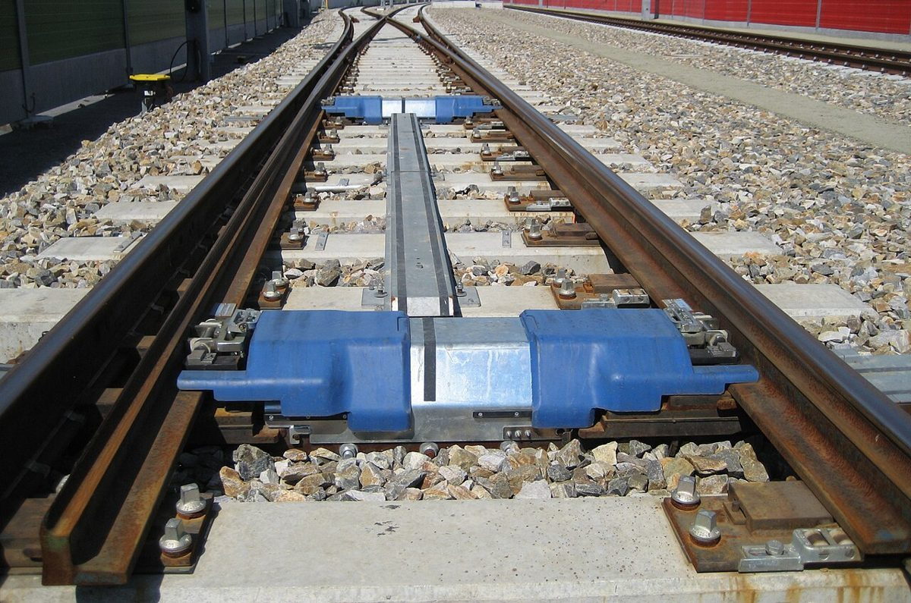
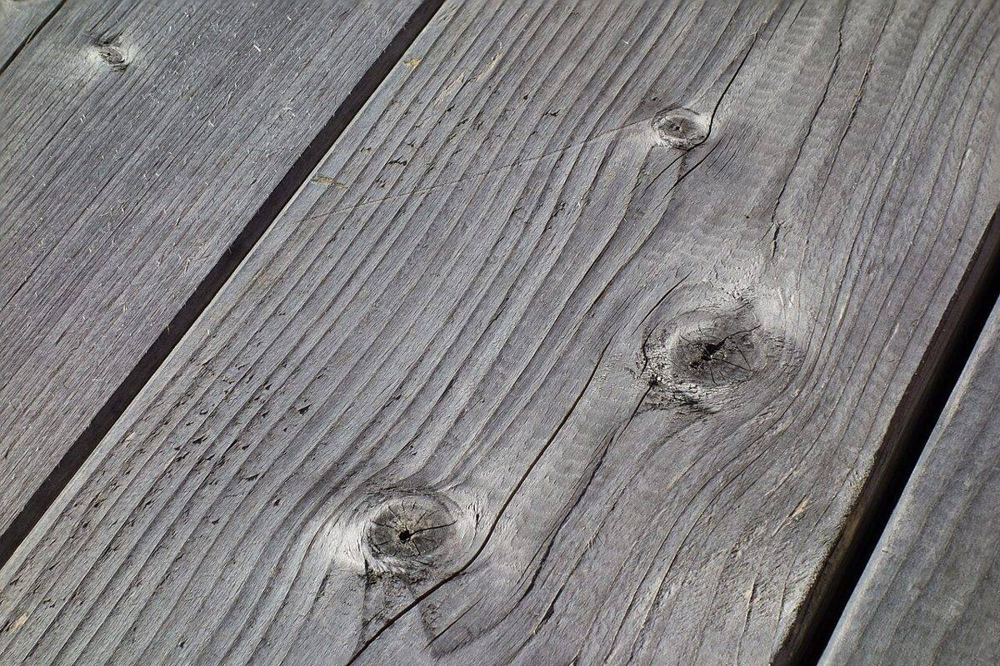

ABOUT
店のこと
ご紹介できる情報は、いまのところ多くありません。詳しいことは準備中です。
確認できていること
所在地とInstagram
| 所在地 | 〒510-8033 三重県四日市市下さざらい町4-16 |
|---|---|
| 電話 | 準備中 |
| 営業時間 | 準備中 |
| 定休日 | 準備中 |
| ご予約 | 準備中 |
| 駐車場 | 準備中 |
| SNS | Instagram @yokkaichi_factorycafe |
部位をひとつずつ
壁スイッチの六つの部位
図に出てくる部位を、小さな絵で並べました。制作側の連想で、お店の理念・由来とは無関係です。
1
化粧プレート
壁の面に見える、四角い板状のカバー。中ほどが窓のようにくり抜かれています。
2
ロッカー
押して切り替える、シーソーのように傾くボタン部分。
3
表示灯
小さなあかり。点くタイプも、ついていないタイプもあります。
4
取付枠
本体をしっかり支える、細長い金属の枠(ヨーク)。
5
端子
電線をつなぐための、ねじ付きの金属の接点部分。
6
取付ねじ
プレートなどを留めておく、小さなねじ。
ギャラリー(イメージ)
手を動かす道具の写真





写真はフリー素材のイメージです。お店のものではありません。